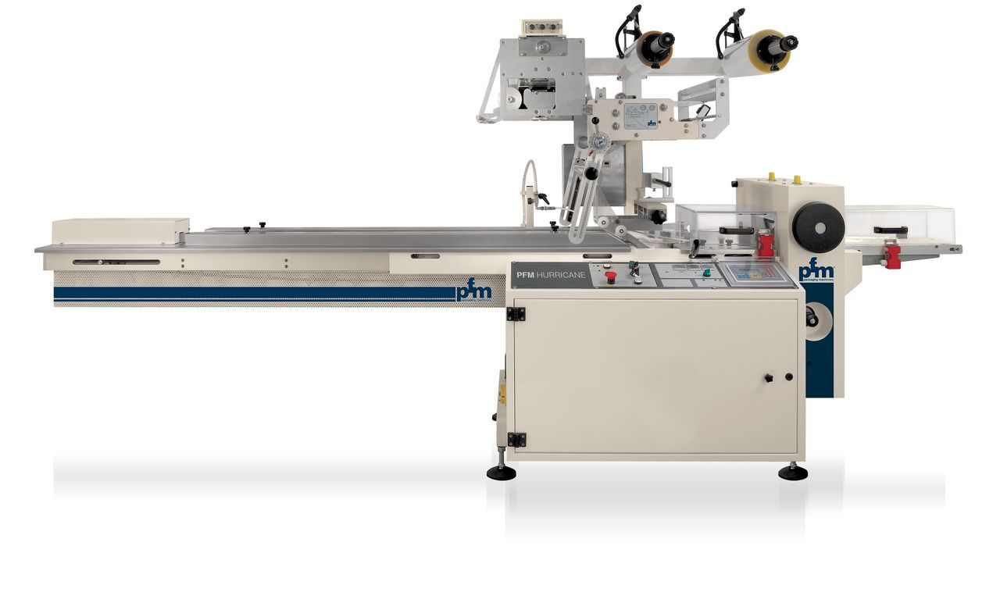

PFM
Горизонтальные упаковочные машины
Машины горизонтально формируют упаковку из рулона плёнки. В каталоге представлены сервоприводная PEARL и регулируемая HURRICANE.
- PEARL и HURRICANE
- Горизонтальная подача
Фотографии и схемы

Описание и комплектация
ГОРИЗОНТАЛЬНАЯ УПАКОВОЧНАЯ МАШИНА PEARL
Полная серво-горизонтальная обертка для упаковки подушек для получения упаковок в виде подушек-упаковок из плоского рулона термо / холодного герметизируемого упаковочного материала. Прочная конструкция с каркасом из углеродистой стали, компактная конструкция, ультрасовременное оборудование, надежное и удобное для пользователя программное обеспечение для управления - это результаты, достигнутые в этом проекте, выражение опыта, достигнутого за многие годы производства машин Flowpack и автоматических линий. Высококачественная инновационная машина.
ГОРИЗОНТАЛЬНАЯ УПАКОВОЧНАЯ МАШИНА HURRICANE
Прочная, привлекательная и совершенная упаковка: специальная конструкция формовочной коробки, оптимальный календарь и ролики для переноса пленки, а также расположение компонентов объединяются, чтобы создать машину, которая идеально упаковывает продукты, производя точные уплотнения без складок.
Высокая гибкость и быстрое изменение размера: ураган может обернуть широкий спектр твердых форм правильной формы из пищевой, канцелярской, химической и фармацевтической отраслей. Нет необходимости менять какие-либо механические детали, чтобы отрегулировать настройку, это делается с помощью двух ручных колес, которые выполняют немедленную регулировку длины пачки и скорости уплотнительных зажимов.
Термоуплотняющиеся материалы: были применены специальные технические решения, которые позволяют урагану использовать термосвариваемые материалы, такие как многослойный или связанный полипропилен, полиэтилен (версия Poly), микроперфорированные и термоусадочные материалы.
Товары
Упаковывает продукты в секторе продуктов питания, косметики, фармацевтической промышленности и канцелярских товаров.
ТЕХНИЧЕСКИЕ ХАРАКТЕРИСТИКИ:
Соответствует стандартам EC.
Ленточный конвейер длиной 2 м с быстросъемными и сменными толкателями.
2 штурвала с цифровой системой отсчета для регулировки длины пакета и скорости обжима.
Формовочная коробка с регулируемой высотой и шириной для продуктов разного размера.
3 комплекта колес для продольной герметизации: первый рисует оберточный материал,
вторая уплотняет материал, а третья складывает клапан.
Самоцентрирующаяся катушка с тормозом.
Моторизованный разгрузочный конвейер длиной 600 мм.
Все детали, контактирующие с продуктом, изготовлены из нержавеющей стали AISI 304.
Каркас из углеродистой стали, стандартный цвет белый RAL 9010 или версия из нержавеющей стали AISI 304.
Доступные версии:
Сверхширокий механический вариант: катушка 750 мм, уплотнительный узел 350 мм.
Электронная версия (2 оси): катушка 500 мм, уплотнительный узел 250 мм.
Электронная версия Extra Wide.
Термоусадочная версия: для термоусадочных материалов с поперечной и продольной системой заподлицо, избыточный материал извлекается.
Поли версия.